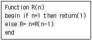
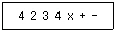
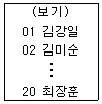
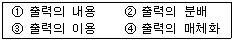
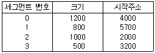
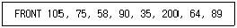

정보처리산업기사 (2005-03-06 기출문제)
1과목: 데이터 베이스
1. 입력 데이터가 R=(71, 2, 38, 5, 7, 61, 11, 26, 53, 42)일 때 2-Way Merge Sort를 2회전한 후 결과는?
- R=(2, 5, 38, 71, 7, 11, 26, 61, 42, 53)
- R=(2, 71, 5, 38, 7, 61, 11, 26, 42, 53)
- R=(2, 5, 7, 11, 26, 38, 61, 71, 42, 53)
- R=(2, 5, 7, 11, 26, 38, 42, 53, 61, 71)
(정답률: 65%)

2. 현실세계의 개념적 구조를 데이터베이스에 구현하기 위한 중간 단계로서 사용자의 입장에서 표현한 논리적 구조를 무엇이라 하는가?
- 개체-관계도
- 데이터 모델
- 정보 모델
- 데이터 구조
(정답률: 51%)
3. SQL의 기술이 옳지 않은 것은?
- SELECT....FROM ....WHERE....
- INSERT....INTO....VALUES....
- UPDATE....TO....WHERE ....
- DELETE....FROM....WHERE....
(정답률: 80%)
4. 순환적 프로그램을 처리할 때 필요하지 않은 것은?
- 데크
- 스택
- 복귀주소
- 순환에서 탈출하는 조건
(정답률: 46%)
5. 다음 알고리즘은 순환(recursion)에 관한 예이다. R(5)를 호출할 때 return되는 값은?

- 14
- 11
- 15
- 21
(정답률: 54%)
6. Which of the following is a language that enables users to access and manipulate data as organized by the appropriate data model?
- data manipulate language
- imperative language
- data definition language
- data control language
(정답률: 64%)
7. 물리적 데이터베이스 설계시 고려해야 할 사항으로 거리가 먼 것은?
- 응답시간
- 응용 프로그램의 양
- 저장공간의 효율성
- 트랜잭션의 처리도
(정답률: 49%)
8. 릴레이션 R의 모든 결정자가 후보 키이면 릴레이션 R은 어떤 정규형에 속하는가?
- 제 1정규형
- 제 2정규형
- 제 3정규형
- 보이스코드(BCNF) 정규형
(정답률: 58%)
9. 데이터베이스 관리시스템(DBMS)의 특징으로 볼 수 없는 것은?
- 자료 중복의 최소화
- 자료의 공동 이용
- 자료의 무결성 유지
- 자료 처리 방법의 단순화
(정답률: 73%)
10. What's the explain next sentence? Choose the collect answer. A quick method for finding an ordered dense list for particular record by successively looking at that half of the remaining portion of the list in which the record is known to.
- tree search
- hashing
- binary search
- block search
(정답률: 50%)
11. 개체-관계 모델(Entity-Relationship Model)에 대한 설명으로 적합하지 않은 것은?
- 1976년 P.Chen이 제안한 개념적 데이터 모델이다.
- E-R 다이어그램에서 사각형은 개체를 표현한다.
- E-R 다이어그램에서 개체와 관계, 속성 사이를 연결해주는 것은 화살표이다.
- E-R 다이어그램에서 마름모는 개체들 간의 관계를 나타낸다.
(정답률: 69%)
12. 릴레이션의 외연(extension)에 관련된 것은?
- 릴레이션 스킴
- 릴레이션 스키마
- 릴레이션 인스턴스
- 릴레이션 타입
(정답률: 50%)
13. 후위 표기(postfix)식이 다음과 같을 때 식의 계산 값은?(단, 수치는 한 자리 숫자로 한다.)

- 6
- 7
- 14
- -10
(정답률: 51%)
14. 관계(relation)의 성질이 아닌 것은?
- 중복된 튜플이 존재하지 않는다.
- 튜플 간의 순서가 있다.
- 속성간의 순서는 없다.
- 모든 속성 값은 원자 값을 갖는다.
(정답률: 74%)
15. 다음 관계 언어 중 절차적 특성을 갖는 것은?
- 관계 대수
- 관계 해석
- 도메인 해석
- 튜플 해석
(정답률: 73%)
16. 자료의 입출력 형태가 FIFO(first-in-first-out) 방식인 자료구조는?
- 데크(deque)
- 연결리스트(linked list)
- 큐(queue)
- 스택(stack)
(정답률: 70%)
17. 데이터베이스 설계과정 중 개념적 설계 단계에 대한 설명으로 옳지 않은 것은?
- 산출물로 개체관계도(ER-D)가 만들어진다.
- DBMS에 독립적인 개념 스키마를 설계한다.
- 트랜잭션 인터페이스를 설계한다.
- 논리적 설계 단계의 전 단계에서 수행된다.
(정답률: 63%)
18. 기본 키의 속성이 널(Null) 값을 가질 수 없는 성질을 나타내는 것은?
- 최소성
- 유일성
- 개체 무결성
- 참조 무결성
(정답률: 83%)
19. 순차 편성 파일의 특징으로 볼 수 없는 것은?
- 기억 장소를 효율적으로 사용한다.
- 프로그래밍이 쉽다.
- 여러 개의 기록 매체에 기록이 가능하다.
- 특정 레코드 검색 효율이 좋다.
(정답률: 69%)
20. 한 조직체의 데이터를 바탕으로 의사결정에 필요한 정보를 추출하고 생성하는 시스템을 무엇이라 하는가?
- 응용시스템
- 자료 처리 시스템
- 정보 시스템
- 파일 시스템
(정답률: 53%)
2과목: 전자 계산기 구조
21. 수치를 표현하는데 있어서 0의 판단이 가장 쉬운 방법은?
- 1의 보수
- 2의 보수
- 부호와 절대치
- 부동 소수점
(정답률: 40%)
22. OS(Operating System)의 목적이 아닌 것은?
- 응답 시간(Turn around time)을 최대로 증가시킨다.
- 프로그램 작성의 노력과 시간을 경감시킨다.
- 자료 처리의 생산성을 향상시킨다.
- 컴퓨터의 실행 시간을 단축시킨다.
(정답률: 76%)
23. "동기 디지털 시스템에 내장되어 있는 모든 레지스터의 타이밍은 ( )에 의하여 제어된다." ( )에 올바른 용어는?
- 마스터 클럭 발생기
- 프로그램 카운터
- 스택 포인터
- 플립 플롭
(정답률: 37%)
24. 기억 장치로부터 명령을 읽어 동작(Operation) 코드 해독하고 처리를 위한 데이터를 구하기 위해 주소지정방식을 결정하는데 이 경우 가장 빠른 주소지정방식은?
- Direct Addressing Mode
- Indirect Addressing Mode
- Relative Addressing Mode
- Immediate Addressing Mode
(정답률: 42%)
25. 어떤 컴퓨터의 메모리 용량이 4K 워드이고, 워드 길이가 16bit 일 때 AR(주소 레지스터)와 DR(데이터 레지스터)는 몇 bit로 구성하여야 하는가?
- AR : 4, DR : 16
- AR : 12, DR : 32
- AR : 16, DR : 65536
- AR : 12, DR : 16
(정답률: 40%)
26. 10진수 9를 Excess-3 code로 변환하면?
- 1 0 0 1(E)
- 1 1 1 0(E)
- 1 1 0 1(E)
- 1 1 0 0(E)
(정답률: 52%)
27. 컴퓨터 조작자가 의도적으로 인터럽트를 발생 할 수 있다. 이 경우의 인터럽트 종류는?
- Machine check interrupt
- External interrupt
- Program interrupt
- I/O interrupt
(정답률: 43%)
28. 중앙처리장치의 하드웨어 요소 중 조합 논리회로만으로 구성된 것은?
- 명령 레지스터(Instruction register)
- 프로그램 카운터(Program counter)
- 어큐뮬레이터(Accumulator)
- 연산기(ALU)
(정답률: 43%)
29. 일반적으로 수식에서 3가지의 연산자(operator)가 혼합되어 나오는데 이들 연산자의 시행 순서가 옳은 것은?
- 산술 연산자 →관계 연산자 →논리 연산자
- 산술 연산자 →논리 연산자 →관계 연산자
- 관계 연산자 →산술 연산자 →논리 연산자
- 논리 연산자 →관계 연산자 →산술 연산자
(정답률: 48%)
30. 고정소수점 숫자가 기억장치 내에 있을 때 다음 4가지 정보 중에서 비트를 차지하지 않아도 되는 것은?
- 소수점
- 소수
- 지수
- 부호
(정답률: 69%)
31. 비수치적 연산을 설명한 것으로 옳은 것은?
- AND 연산은 레지스터 내에 특정 비트를 삽입하기 위한 연산으로 주로 사용된다.
- X-OR 연산은 레지스터내의 모든 비트를 0으로 클리어(clear) 할 때 사용하는 연산이다.
- COMPLEMENT 연산은 자료의 특정 비트 혹은 문자를 삭제하고자 할 때 사용된다.
- MOVE 연산은 특정 레지스터의 내용을 다른 레지스터로 옮기고자 하는 경우 사용한다.
(정답률: 61%)
32. 명령 코드가 명령을 수행할 수 있도록 필요한 기능을 제공하여 주는 역할을 하는 것은?
- 누산기
- 제어 장치
- 레지스터
- 번지 필드(field)
(정답률: 53%)
33. 10진법의 수 274의 9의 보수는?
- 726
- 725
- 265
- 283
(정답률: 53%)
34. PUSH, POP 명령어 처리와 가장 가까운 명령어 형식은?
- 0-주소 명령어
- 1-주소 명령어
- 2-주소 명령어
- 3-주소 명령어
(정답률: 53%)
35. 주기억 장치와 I/O장치와의 시간적, 공간적 특성 차이를 나타낸 것이 아닌 것은?
- 버스구성
- 정보의 단위
- 동작의 자율성
- 동작속도
(정답률: 38%)
36. 컴퓨터의 성능을 높이기 위하여 명령의 처리속도를 CPU의 속도와 같도록 하기 위해 기억장치와 CPU 사이에 사용하는 기억장치는?
- ROM
- virtual memory
- DRAM
- cache memory
(정답률: 84%)
37. 각각의 문자에 대하여 8개의 비트와 1개의 패리티 비트로 구성되는 코드는?
- EBCDIC 코드
- BCD 코드
- 하모니 코드
- 액세스(Excess)3 코드
(정답률: 58%)
38. 16진수 (7C.D)16를 8진수로 변환하면?
- 174.61
- 174.64
- 176.61
- 176.64
(정답률: 53%)
39. 마이크로 동작(Micro - operation)에 대한 정의로서 옳은 것은?
- 컴퓨터의 빠른 계산 동작
- 2진수 계산에 쓰이는 동작
- 플립플롭 내에서 기억되는 동작
- 레지스터에 저장된 데이터에 의해서 이루어지는 동작
(정답률: 63%)
40. 단항(Unary) 연산을 행하는 것은?
- SHIF
- AND
- OR
- 4칙 연산
(정답률: 61%)
3과목: 시스템분석설계
41. 컴퓨터 입력 단계에서의 체크 중 프로그램에 상한 값이나 하한 값을 넣어두고 이것을 입력된 수치와 비교해서 체크하는 방법은?
- 숫자 체크
- 범위 체크
- 일괄합계 체크
- 대차 체크
(정답률: 61%)
42. 시스템을 평가하는 목적으로 거리가 먼 것은?
- 시스템 운영관리의 타당성 파악
- 시스템의 성능과 유용도 판단
- 처리비용과 효율면에서 개선점 파악
- 시스템 운영요원의 재훈련
(정답률: 88%)
43. 동일한 파일형식을 가지고 있는 두개 이상의 파일을 하나로 정리하는 처리 패턴으로 별도로 작성된 파일을 컴퓨터의 처리 효율이나 파일의 보관 등을 고려해서 하나의 파일로 통합하는 경우에 사용되는 처리(process)패턴을 무엇이라고 하는가?
- 대조(Match)패턴
- 병합(Merge)패턴
- 갱신(Updata)패턴
- 생성(Generate)패턴
(정답률: 79%)
44. 소프트웨어 개발 생명주기 모형 중 나선형(Spiral Model)모델의 특징으로 틀린 것은?
- 시스템 구축시 발생하는 위험을 최소화 할 수 있다.
- 시제품을 만들어 사용자 및 관리자에게 가능성과 유용성을 보여줄 수 있다.
- 복잡, 대규모 시스템의 소프트웨어 개발에 적합하다.
- 초기에 위험 요소를 발견하지 못할 경우 위험 요소를 제거하기 위해서 많은 비용이 들 수 있다.
(정답률: 40%)
45. 문서화(Documentation)의 설명 중 적합하지 않은 것은?
- 프로그램 내에도 문서화를 할 수 있다.
- 문서화는 시스템이 모두 개발된 후에 일괄적으로 작업해야 정확하다.
- 문서도 시스템 구성요소의 하나다.
- 문서화는 시스템 개발 과정의 작업이라고 할 수 있다
(정답률: 74%)
46. 순서도와는 달리 논리기술에 중점을 두고 상자도형을 이용한 도형식 설계도구로 순차, 선택, 반복, 케이스(case) 제어 구조를 표현하는 도구는?
- HIPO
- N-S Chart
- HOS
- Decision Table
(정답률: 38%)
47. 20명의 학생 코드를 부여할 경우 성명을 한글소트(SORT)로 하고 보기와 같이 01부터 20까지 순서대로 부여하는 코드는?

- 순서코드
- 구분코드
- 그룹분류코드
- 약자식코드
(정답률: 76%)
48. 자료흐름도(Data Flow Diagram)의 구성요소가 아닌 것은?
- 처리(process)-원
- 흐름(flow)-화살표
- 단말(terminator)-사각형
- 비교(compare)-마름모
(정답률: 49%)
49. 시스템 개발비 산정시 고려할 요소들로는 프로젝트요소, 자원요소, 생산성요소 등이 있다. 다음 중 생산성 요소가 아닌 것은?
- 개발자의 능력
- 시스템의 신뢰도
- 개발비용과 개발시간
- 개발 방법론
(정답률: 40%)
50. 다음 중 입력 설계시 가장 먼저 설계하는 항목은?
- 입력 정보 수집의 설계
- 입력 정보 매체의 설계
- 입력 정보 발생의 설계
- 입력 정보 내용의 설계
(정답률: 63%)
51. 시스템 개발 단계로 옳은 것은?
- 시스템 조사-설계-분석-구현-유지보수
- 시스템 조사-분석-설계-유지보수-구현
- 시스템 조사-분석-설계-구현-유지보수
- 시스템 조사-설계-분석-유지보수-구현
(정답률: 74%)
52. 원시전표의 설계시 고려하여야 할 사항으로 옳지 않은 것은?
- 원시전표는 기입이 쉽도록 해야 한다.
- 가능한 기입량을 적게 한다.
- 일정한 순서에 따라 차례로 기입될 수 있게 한다.
- 전표번호나 발행 부문과 같은 고정항목은 기입자가 반드시 기입하도록 한다.
(정답률: 48%)
53. 시스템에 대한 기초 조사 방법 중 수집되어야 할 정보가 여러 사람의 의견으로부터 도출되어야 하거나, 지리적으로 멀리 떨어져 있는 곳의 정보를 수집하고자 할 때 주로 사용되는 방법은 어느 것인가?
- 현장 조사
- 질문서 조사
- 자료 조사
- 면담 조사
(정답률: 56%)
54. 코드의 기능이 아닌 것은?
- 표준화 기능
- 분류 기능
- 암호화 기능
- 고정 기능
(정답률: 68%)
55. 출력 설계 순서가 옳은 것은?

- ①-④-②-③
- ④-②-③-①
- ②-③-①-④
- ③-①-④-②
(정답률: 67%)
56. 파일의 종류 중 내용을 변경하거나 참조할 때 사용하며 일시적인 성격을 지닌 정보를 기록하는 파일은?
- transaction file
- master file
- source data file
- backup file
(정답률: 64%)
57. 랜덤 파일 편성에 대한 설명으로 올바르지 않은 것은?
- 키-주소 변환방법에 의하여 전혀 충돌이 발생하지 않는다.
- 처리하고자 하는 레코드를 주소계산에 의해 직접 처리할 수 있다.
- 운영체제에서 키-주소변환을 자동적으로 해준다.
- 어떤 레코드라도 평균접근 시간 내에 검색이 가능하다.
(정답률: 61%)
58. 객체 지향의 기본 개념 중 데이터와 절차를 일체화한 것으로 실제로 존재하거나 혹은 추상적이라도 개별적이고 인식할 수 있는 모든 항목을 일컫는 용어는 무엇인가?
- 연산(Operation)
- 메소드(Method)
- 객체(Object)
- 메시지(Message)
(정답률: 66%)
59. 코드화 대상 항목의 성질 즉 길이, 넓이, 부피, 높이 등을 나타내는 의미가 있는 문자, 숫자, 기호 등을 그대로 사용하는 코드는?
- sequence code
- significant digit code
- block code
- group classification code
(정답률: 73%)
60. 색인 순차파일 편성은 데이터 부분과 색인 부분으로 구성되는데 다음 중 색인부분에 해당되지 않는 것은?
- 오버플로우 영역 인덱스
- 마스터 인덱스
- 실린더 인덱스
- 트랙 인덱스
(정답률: 67%)
4과목: 운영체제
61. 분산 운영체제에서 프로세스 P가 사이트 A에 있는 파일에 접근할 때 프로세스가 원격 프로시져 호출(Remote Procedure Call)을 이용하여 이동하는 이주 기능은?
- 데이터 이주
- 연산 이주
- 프로세스 이주
- 사이트 이주
(정답률: 22%)
62. HRN 스케줄링에서 우선순위 결정의 계산식은?
- (대기시간 + 실행시간) / 실행시간
- (대기시간 + 서비스 시간) / 실행시간
- (대기시간 + 서비스 시간) / 서비스 시간
- (실행시간 + 서비스 시간) / 서비스 시간
(정답률: 74%)
63. 다음과 같은 세그멘트 테이블이 있을 때, 실제 주소는 얼마가 되겠는가? (단, 가상주소 = s(2,100))

- 1500
- 1600
- 2000
- 2100
(정답률: 37%)
64. 운영체제의 기능으로 적당하지 않은 것은?
- 컴퓨터 시스템의 초기화 기능
- 효율적인 자원관리와 할당기능
- 고급 언어로 작성된 프로그램을 기계어로 번역하는 기능
- 오류 검사 및 복구 기능
(정답률: 66%)
65. 유닉스 시스템에서 파일의 내용을 화면에 출력할 때 사용하는 명령어는?
- cat
- finger
- ls
(정답률: 60%)
66. 파일 시스템의 일반적인 기능으로 거리가 먼 것은?
- 사용자 외에 타인이 파일에 대한 작업을 할 수 없도록 한다.
- 사용자가 파일을 생성하고, 변경하고 제거할 수 있도록 한다.
- 정보의 손실이나 파괴를 방지하기 위해 백업과 복구 능력을 갖추어야 한다.
- 사용하기 편리한 인터페이스를 제공해야 한다.
(정답률: 60%)
67. UNIX에서 커널의 기능이 아닌 것은?
- 프로세스 관리 기능
- 기억장치 관리 기능
- 입/출력 관리 기능
- 명령어 해독 기능
(정답률: 73%)
68. 프로세스의 정의로 적당하지 않은 것은?
- 하드웨어에 의해 사용되는 입/출력 장치
- 실행중인 프로그램
- 운영체제 내에 프로세스 제어 블록의 존재로서 명시되는 것
- 프로세서가 할당되는 개체
(정답률: 62%)
69. 사용자 password에 대한 설명으로 옳지 않은 것은?
- 추측 가능한 사용자의 전화번호, 생년월일 등으로는 구성하지 않는 것이 바람직하다.
- 암호가 짧을수록 추측에 의한 암호 발각 가능성이 희박하다.
- 암호는 자주 변경하는 것이 바람직하다.
- 불법 액세스를 방지하는데 사용된다.
(정답률: 84%)
70. 인터럽트의 종류에 해당하지 않는 것은?
- 프로세스 인터럽트
- 입/출력 인터럽트
- 외부 인터럽트
- SVC(Supervisor Call) 인터럽트
(정답률: 44%)
71. 운영체제가 보조 기억장치의 적절한 관리를 위해서 하는 일 중 옳지 않은 것은?
- 기억 장소의 할당
- 응용 프로그램 유지보수
- 빈 공간의 관리
- 디스크 스케줄링
(정답률: 62%)
72. 하나의 프로세스가 자주 참조하는 페이지의 집합을 의미하며, 이런 페이지 집합이 적재되면 프로세스는 한동안 페이지 폴트 없이 실행될 수 있다. 이런 페이지 집합을 무엇이라 하는가?
- working set
- critical section
- paging
- fragmentation
(정답률: 61%)
73. 기억장치 배치 전략으로 사용되지 않는 것은?
- 최적 적합(best-fit) 전략
- 최초 적합(first-fit) 전략
- 최종 적합(last-fit) 전략
- 최악 적합(worst-fit) 전략
(정답률: 71%)
74. 분산 처리 시스템의 장점에 해당하지 않는 것은?
- 자원의 공유
- 신뢰도 향상
- 부하의 균형
- 보안의 향상
(정답률: 65%)
75. 비선점(nonpreemptive)형 프로세스 스케줄링 방식에 해당하는 것은?
- SJF, SRT
- SJF, FIFO
- Round-Robin, SRT
- Round-Robin, SJF
(정답률: 56%)
76. 페이지 교체 기법 중 시간 오버헤드를 줄이는 기법으로서 참조비트(referenced bit)와 변형비트(modified bit)를 필요로 하는 방법은?
- FIFO
- LRU
- LFU
- NUR
(정답률: 60%)
77. 파일의 편성 방식 중 해쉬(Hash) 기법과 가장 연관이 많은 파일은?
- 순차파일
- 직접파일
- 색인파일
- 색인순차파일
(정답률: 36%)
78. 디스크의 서비스 요청 대기큐에 도착한 요청이 다음과 같을 때 SSTF 스케쥴링 기법 사용시 75번 트랙은 몇 번째로 서비스 받는가?(단, 현재 헤드위치는 100번 트랙으로 가정한다.)

- 두 번째
- 세 번째
- 네 번째
- 다섯 번째
(정답률: 59%)
79. 하나의 프로세스가 시스템 내에 존재하는 동안 그 프로세스는 여러 상태를 거치게 된다. 상태 전이에 관한 설명으로 옳지 않은 것은?
- 디스패칭(dispatching) : 준비상태 →실행상태
- 보류상태(block) : 실행상태 →보류상태
- 조건만족(wakeup) : 보류상태 →실행상태
- 할당시간 종료(time runout) : 실행상태 →준비상태
(정답률: 32%)
80. 프로그램이 프로세서에 의해 수행되는 속도와 프린터 등에서 결과를 처리하는 속도의 차이를 극복하기 위해 디스크 저장 공간을 사용하는 기법은?
- 링킹(linking)
- 사이클 스틸링(cycle stealing)
- 스풀링(spooling)
- 페이징(paging)
(정답률: 67%)
5과목: 정보통신개론
81. 홀수 패리티가 부가된 7비트 ASCII 코드 D(1000001)의 송신 데이터는?
- 1000010
- 0100001
- 10000011
- 11000010
(정답률: 44%)
82. 전화와 텔레비젼의 연결에 의한 정보서비스의 형태는?
- 비디오텍스(videotex)
- 텔리텍스트(teletext)
- 팩시밀리(fax)
- 텔렉스(telex)
(정답률: 46%)
83. 각기 다른 LAN을 통합시켜 관련이 있는 기관과 상호 연결시킨 광역통신망은?
- WAN
- PSTN
- VAN
- INTERNET
(정답률: 52%)
84. 다음 네트워크 장비 중에서 OSI의 네트워크 계층까지의 기능을 수행하는 것은?
- 아답터
- 브릿지
- 라우터
- 리피터
(정답률: 72%)
85. 다음 중 근거리(LAN)통신망을 설치시 전송용량 측면에서 가장 좋은 케이블은?
- CCP케이블
- 장하케이블
- 광섬유케이블
- 동축케이블
(정답률: 66%)
86. 속도단위 [bps]의 가장 적합한 정의는?
- 1초간의 데이터 전송 비트 수
- 1초간의 신호 펄스의 발생 수
- 1분간의 신호 주파수 전송 수
- 1분간의 보(baud)의 2배 전송 수
(정답률: 68%)
87. 다음 중 ISDN에 대해 바르게 설명한 것은?
- 아날로그 통신기술을 전제로 하고 있다.
- 음성, 비음성 데이터 서비스의 각 분야를 독립적으로 처리하는 통신망이다.
- 한 빌딩 내 또는 특정지역내의 복수의 컴퓨터, 워드프로세서 등을 접속하는 상호 통신망이다.
- 모든 통신서비스를 단일통신망으로 통합한 것이다
(정답률: 45%)
88. 다음 ITU 권고안 중 MHS에 대한 권고안은?
- X.25
- V.27
- X.400계열
- T.400계열
(정답률: 33%)
89. 다음 중 뉴미디어의 특징으로 관계가 가장 적은 것은 ?
- 정보교환의 고속화와 대용량화
- 다채널성과 쌍방향성
- 반도체와 아날로그 기술화
- 정보형태의 다양화
(정답률: 75%)
90. 패킷교환망에서 데이터 터미널장치와 데이터 회선종단장치 간의 인터페이스에 관한 규정은 ?
- X.2
- X.25
- X.75
- SDLC
(정답률: 60%)
91. 다음 중 서로 관계가 올바르게 짝지어진 것은?
- 아날로그 데이터를 아날로그 신호로 변조 : PCM
- 디지털 데이터를 아날로그 신호로 변조 : FSK
- 아날로그 데이터를 디지털 신호로 변조 : DSU
- 디지털 데이터를 디지털 신호로 변조 : CODEC
(정답률: 32%)
92. 정보통신 시스템의 회선종단장치(DCE) 중 디지털 신호를 아날로그 신호로 변환시켜 주는 장치는 ?
- DSU
- CCU
- MODEM
- PCM
(정답률: 59%)
93. HDLC의 데이터 전달모드가 아닌 것은 ?
- 표준 균형모드
- 정규 응답모드
- 비동기 균형모드
- 비동기 응답모드
(정답률: 47%)
94. 프로세스 간에 대한 연결을 확립, 관리, 단절시키는 수단을 제공하고 동기제어 등을 수행하는 OSI 7 Layer의 계층은?
- Physical Layer
- Network Layer
- Data Link Layer
- Session Layer
(정답률: 32%)
95. 다음 중 PBX란 무엇을 의미하는가?
- 공공 구내교환 시스템
- 사설 구내교환 시스템
- 고속 네트워크 시스템
- 광역 네트워크 시스템
(정답률: 41%)
96. LAN의 액세스방식 중 ETHERNET에서 채택한 제어방식은 ?
- 랜덤(RANDOM)방식
- CSMA/CD방식
- 토큰패싱(Token passing)방식
- 토큰링크(Token Link)방식
(정답률: 72%)
97. 통신위성의 궤도 위치는 지구 적도 상공 몇[km] 정도인가 ?
- 500
- 6,600
- 14,000
- 36,000
(정답률: 61%)
98. 부가가치통신망(VAN)의 통신처리기능으로서 회선의 접속 및 각종 제어절차 등의 데이터를 전송할 때 통신절차를 변환하는 기능은?
- 미디어변환
- 프로토콜변환
- 포맷변환
- 부호변환
(정답률: 71%)
99. 데이터 통신의 에러체크방식 중 수직패리티 체크방식이 우수 패리티 방식을 채택할 경우 1개 부호 중 수직에 대한 1의 bit수를 어떻게 하고 있는가?
- 홀수가 되도록 한다.
- 3의 배수가 되도록 한다.
- 짝수가 되도록 한다.
- 5개가 되도록 한다.
(정답률: 44%)
100. 정보통신의 설명 내용으로 가장 적합하지 않은 것은 ?
- 전기 통신과 컴퓨터의 정보처리 능력을 부가시켜 정보를 송수신 처리하는 통신
- 컴퓨터나 통신기기 사이에서 디지털 형태로 표현된 정보를 송수신하는 통신
- 전기적인 신호형태의 디지털 데이터만 컴퓨터로 송수신하는 통신
- 정보처리장치 등에 의하여 처리된 정보를 전송하는 기계 장치 간의 통신
(정답률: 69%)
따라서, 2회전한 결과는 다음과 같습니다.
1회전: (2, 71), (5, 38), (7, 61), (11, 26), (42, 53)
2회전: (2, 5, 38, 71), (7, 11, 26, 61), (42, 53)
마지막으로 전체를 합치면 R=(2, 5, 38, 71, 7, 11, 26, 61, 42, 53)이 됩니다.
이유는 2회전에서 각각의 묶음에서 작은 값부터 차례대로 비교하면서 정렬하기 때문입니다. 따라서, (2, 5, 38, 71)과 (7, 11, 26, 61)에서는 작은 값부터 차례대로 비교하면서 정렬되고, (42, 53)에서도 작은 값부터 차례대로 비교하면서 정렬됩니다. 마지막으로 전체를 합칠 때에도 작은 값부터 차례대로 비교하면서 정렬됩니다.